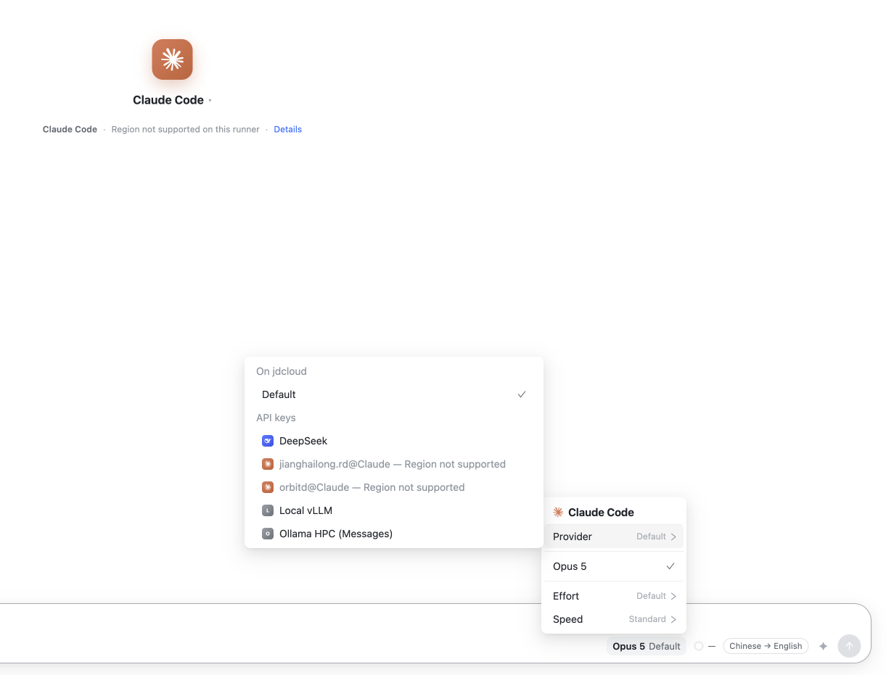

今天草稿的 (引擎, 凭据) = 这个 workspace 最近一条人开的会话，不看它在这台机器上能不能跑（currentEngineChoice 刻意"原样画出"）。
jdcloud 上 Anthropic 因地区不可用，于是预选的 "Default" 发出去就 409。
方案：记住的选择是偏好，不是命令——能跑就用；不能跑就落到最近的能跑的，并在原地说一句为什么。
已有的 landingOf（在列表里换引擎时用）本来就会跳过不能跑的凭据，只是"记住的那一个"没走这条路。不加存储、不加设置、不动服务端。

Use another provider / Move to another machine 文案）。| 项 | 规则 |
|---|---|
| 选择顺序 | ① 显式点过的（draftPick）→ 原样，哪怕不能跑（显示原因）。② 记住的 (引擎, 凭据) 能跑 → 用它。 ③ 不能跑 → 同引擎走 landingOf：引擎自己的登录 → 不在池里的第一个 → 第一个能跑的。④ 本引擎全不能跑 → hero 列表顺序里第一个有能跑凭据的引擎。 ⑤ 都没有 → 停在记住的那个，显示原因，发送置灰（帧 ④）。 |
| 什么算"不能跑" | 只认已知的坏状态，即凭据上已有的 unavailable：地区不支持、未安装、已登出、池里没有可用账号、key 被拒。没检查过 / 还没加载 = 能跑，不因不确定而跳。 |
| 什么时候定 | 派生值，不存：数据到齐后每次渲染算一遍。数据晚到可能让预选变一次，但 hero 那句话会同时出现，说明为什么。 |
| 存什么 | 什么都不新存。发出去的会话就是这个 workspace 的"最近一条"，下次草稿自然记住 DeepSeek。 |
| 无人值守的工作 | 本方案不动：任务运行、协调者等仍按 docs/workspace-default-model-design.md 的来源，碰到地区问题照旧失败并报出来，不会悄悄从 Anthropic 换到别家（见待定 1）。 |
| 文件 | 改什么 |
|---|---|
web/src/lib/sessionProviderChoices.ts | 新增 usableDraftChoice：记住的不能跑 → landingOf，再不行 → 下一个引擎 |
web/src/components/WorkspaceView.tsx | 没有 draftPick 时，pickedEngine/pickedProvider 取上面的结果（发送也用它）；帧 ④ 发送置灰 |
web/src/components/NewSessionProviderHero.tsx | 换过时的那句话（帧 ② ③）；帧 ④ 的两条出路 |
web/src/lib/claudeRegionCopy.ts | 新文案：Using {provider}、Anthropic isn’t available on {machine}、{engine} can’t run on {machine}: {reason}、Nothing on {machine} can run a session yet. |
| Provider 菜单 | 地区被挡时 Default 行也画灰 + "— Region not supported"（帧 ② 5） |
OrbitKit/App/SessionProviderChoices.swift | 同一规则（它也有 landingOf），加 parity 测试 |
| Android | 没找到对应的引擎 hero；实现时先确认它的新会话默认从哪来 |
| 服务端 | 不改。上一轮我提议放服务端，读代码后收回：能不能跑的判断（地区、安装、登录、池）只在客户端汇总，landingOf 也已在客户端 |
landingOf 顺序（建议，零新数据，截图里结果是 DeepSeek），还是"我在这个引擎上最近用过的"（更聪明，但要新查一份数据）？Claude sign-in，还是另开一件事？（建议另开，三端文案都要动）